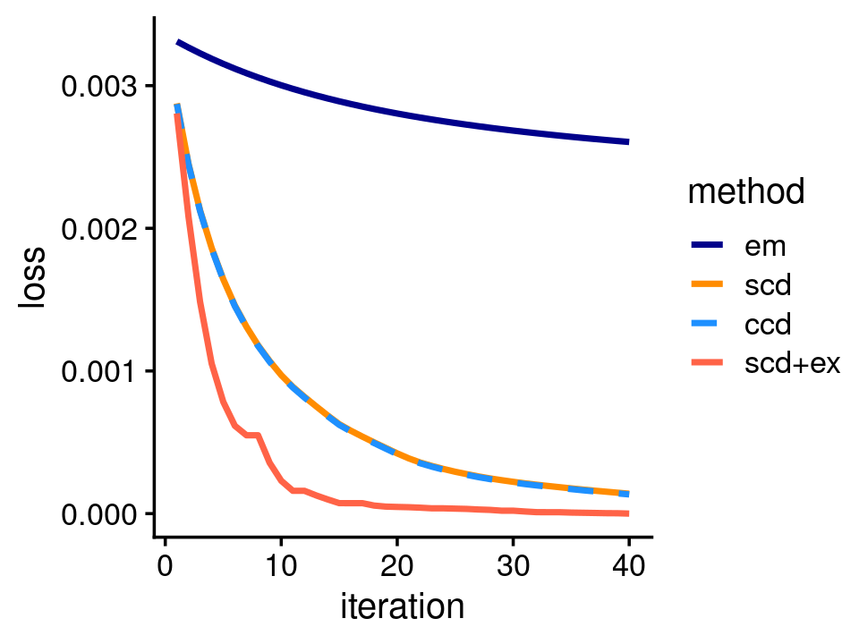

Last updated: 2021-03-22
Checks: 7 0
Knit directory: fastTopics-experiments/analysis/
This reproducible R Markdown analysis was created with workflowr (version 1.6.2). The Checks tab describes the reproducibility checks that were applied when the results were created. The Past versions tab lists the development history.
Great! Since the R Markdown file has been committed to the Git repository, you know the exact version of the code that produced these results.
Great job! The global environment was empty. Objects defined in the global environment can affect the analysis in your R Markdown file in unknown ways. For reproduciblity it’s best to always run the code in an empty environment.
The command set.seed(1) was run prior to running the code in the R Markdown file. Setting a seed ensures that any results that rely on randomness, e.g. subsampling or permutations, are reproducible.
Great job! Recording the operating system, R version, and package versions is critical for reproducibility.
Nice! There were no cached chunks for this analysis, so you can be confident that you successfully produced the results during this run.
Great job! Using relative paths to the files within your workflowr project makes it easier to run your code on other machines.
Great! You are using Git for version control. Tracking code development and connecting the code version to the results is critical for reproducibility.
The results in this page were generated with repository version ba11b8b. See the Past versions tab to see a history of the changes made to the R Markdown and HTML files.
Note that you need to be careful to ensure that all relevant files for the analysis have been committed to Git prior to generating the results (you can use wflow_publish or wflow_git_commit). workflowr only checks the R Markdown file, but you know if there are other scripts or data files that it depends on. Below is the status of the Git repository when the results were generated:
Ignored files:
Ignored: data/GSE103354_Trachea_droplet_UMIcounts.txt.gz
Ignored: data/droplet.RData
Ignored: data/pbmc_68k
Ignored: data/pbmc_68k.RData
Ignored: output/newsgroups/fits-newsgroups.RData
Ignored: output/newsgroups/rds/
Ignored: output/nips/fits-nips.RData
Ignored: output/nips/rds/
Unstaged changes:
Modified: matlab/dat100x200.mat
Note that any generated files, e.g. HTML, png, CSS, etc., are not included in this status report because it is ok for generated content to have uncommitted changes.
These are the previous versions of the repository in which changes were made to the R Markdown (analysis/scd_vs_ccd.Rmd) and HTML (docs/scd_vs_ccd.html) files. If you’ve configured a remote Git repository (see ?wflow_git_remote), click on the hyperlinks in the table below to view the files as they were in that past version.
| File | Version | Author | Date | Message |
|---|---|---|---|---|
| Rmd | ba11b8b | Peter Carbonetto | 2021-03-22 | workflowr::wflow_publish(“scd_vs_ccd.Rmd”, verbose = TRUE, view = FALSE) |
| html | 32b302f | Peter Carbonetto | 2021-03-22 | Build site. |
| Rmd | 37a695a | Peter Carbonetto | 2021-03-22 | workflowr::wflow_publish(“scd_vs_ccd.Rmd”, verbose = TRUE, view = FALSE) |
| html | 323bf3a | Peter Carbonetto | 2021-03-22 | Added progress plot to scd_vs_ccd example. |
| Rmd | 508368d | Peter Carbonetto | 2021-03-22 | workflowr::wflow_publish(“scd_vs_ccd.Rmd”, verbose = TRUE, view = FALSE) |
| Rmd | c480a00 | Peter Carbonetto | 2021-03-21 | Made a few improvements to the scd_vs_ccd example. |
| html | 4fe5ac7 | Peter Carbonetto | 2021-03-21 | First build of scd_vs_ccd example. |
| Rmd | 833235b | Peter Carbonetto | 2021-03-21 | workflowr::wflow_publish(“scd_vs_ccd.Rmd”, view = FALSE) |
| Rmd | ff4bd15 | Peter Carbonetto | 2021-03-21 | Added link to overview page. |
Here we show in a small, simulated data set that the SCD and CCD algorithms produce the exact same sequence of iterates.
Load the packages used in the analysis below.
library(R.matlab)
library(NNLM)
library(fastTopics)
library(ggplot2)
library(cowplot)Set the seed so that the results can be reproduced.
set.seed(1)Simulate a 100 x 200 counts matrix.
X <- simulate_count_data(100,200,3)$X“Pre-fit” t he model with the aim of better ensuring that the same local maximum is recovered by all runs below.
fit0 <- fit_poisson_nmf(X,k = 3,numiter = 20,method = "mu",
control = list(numiter = 1))
writeMat("../matlab/dat100x200.mat",X = X,L0 = fit0$L,F0 = fit0$F)Run 40 multiplicative (EM) updates (as implemented in NNLM).
fit1 <- suppressWarnings(nnmf(X,k = 3,init = list(W = fit0$L,H = t(fit0$F)),
method = "lee",loss = "mkl",max.iter = 40,
trace = 1,rel.tol = 0,inner.max.iter = 1,
inner.rel.tol = 0,n.threads = 1))Run 40 SCD updates (as implemented in NNLM).
fit2 <- suppressWarnings(nnmf(X,k = 3,init = list(W = fit0$L,H = t(fit0$F)),
method = "scd",loss = "mkl",max.iter = 40,
trace = 1,rel.tol = 0,inner.max.iter = 1,
n.threads = 1))Load the result of running 40 CCD updates on the same data set in MATLAB.
fit3 <- readMat("../matlab/ccd100x200.mat")
fit3$obj <- drop(fit3$obj)The estimates obtained after running the CCD and SCD updates are nearly the same:
print(range(fit2$W - fit3$W))
print(range(fit2$H - fit3$H))
# [1] -1.116106e-09 1.565456e-09
# [1] -9.941866e-10 1.446030e-09Finally, I compare against SCD with extrapolation, as implemented in fastTopics.
fit4 <- fit_poisson_nmf(X,fit0 = fit0,numiter = 40,method = "scd",
control = list(extrapolate = TRUE,numiter = 1))This plot shows the improvement in the solutions over time. (Some adjustments need to be made to the fit_poisson_nmf output as it outputs log-likelihoods, whereas the others output generalized KL-divergences.)
y <- fit4$progress[21:60,"loglik"]
y <- sum(X*log(X + 1e-15) - X) - y + sum(fastTopics:::loglik_poisson_const(X))
y <- y/(100*200)
pdat <- rbind(data.frame(iter = 1:40,loss = fit1$mkl,method = "em"),
data.frame(iter = 1:40,loss = fit2$mkl,method = "scd"),
data.frame(iter = 1:40,loss = fit3$obj,method = "ccd"),
data.frame(iter = 1:40,loss = y,method = "scd+ex"))
pdat <- transform(pdat,loss = loss - min(loss))
ggplot(pdat,aes(x = iter,y = loss,color = method,linetype = method)) +
geom_line(size = 1) +
scale_color_manual(values = c("darkblue","darkorange","dodgerblue",
"tomato")) +
scale_linetype_manual(values = c("solid","solid","dashed","solid")) +
labs(x = "iteration",y = "loss") +
theme_cowplot(font_size = 12)
The EM (multiplicative) updates progress much more slowly than the others.
The CCD and SCD updates overlap exactly.
And the extrapolation accelerates convergence of the SCD updates.
sessionInfo()
# R version 3.5.1 (2018-07-02)
# Platform: x86_64-pc-linux-gnu (64-bit)
# Running under: Scientific Linux 7.4 (Nitrogen)
#
# Matrix products: default
# BLAS/LAPACK: /software/openblas-0.2.19-el7-x86_64/lib/libopenblas_haswellp-r0.2.19.so
#
# locale:
# [1] LC_CTYPE=en_US.UTF-8 LC_NUMERIC=C
# [3] LC_TIME=en_US.UTF-8 LC_COLLATE=en_US.UTF-8
# [5] LC_MONETARY=en_US.UTF-8 LC_MESSAGES=en_US.UTF-8
# [7] LC_PAPER=en_US.UTF-8 LC_NAME=C
# [9] LC_ADDRESS=C LC_TELEPHONE=C
# [11] LC_MEASUREMENT=en_US.UTF-8 LC_IDENTIFICATION=C
#
# attached base packages:
# [1] stats graphics grDevices utils datasets methods base
#
# other attached packages:
# [1] cowplot_1.1.1 ggplot2_3.3.3 fastTopics_0.5-24 NNLM_0.4.4
# [5] R.matlab_3.6.2
#
# loaded via a namespace (and not attached):
# [1] httr_1.4.2 tidyr_0.8.3 jsonlite_1.6
# [4] viridisLite_0.3.0 R.utils_2.7.0 RcppParallel_5.0.1
# [7] assertthat_0.2.0 mixsqp_0.3-46 yaml_2.2.0
# [10] progress_1.2.0 ggrepel_0.9.1 pillar_1.5.0
# [13] backports_1.1.2 lattice_0.20-38 quantreg_5.36
# [16] glue_1.4.2 quadprog_1.5-5 digest_0.6.18
# [19] promises_1.0.1 colorspace_1.3-2 htmltools_0.3.6
# [22] httpuv_1.4.5 Matrix_1.2-15 R.oo_1.22.0
# [25] pkgconfig_2.0.2 invgamma_1.1 SparseM_1.77
# [28] purrr_0.3.2 scales_1.0.0 whisker_0.3-2
# [31] later_0.7.5 Rtsne_0.15 MatrixModels_0.4-1
# [34] git2r_0.26.1 tibble_3.1.0 generics_0.0.2
# [37] ellipsis_0.2.0.1 withr_2.1.2 ashr_2.2-51
# [40] lazyeval_0.2.1 magrittr_1.5 crayon_1.3.4
# [43] mcmc_0.9-7 evaluate_0.12 R.methodsS3_1.7.1
# [46] fs_1.3.1 fansi_0.4.0 MASS_7.3-51.1
# [49] truncnorm_1.0-8 tools_3.5.1 data.table_1.12.0
# [52] prettyunits_1.0.2 hms_0.4.2 lifecycle_1.0.0
# [55] stringr_1.3.1 MCMCpack_1.4-4 plotly_4.9.3
# [58] munsell_0.5.0 irlba_2.3.3 compiler_3.5.1
# [61] rlang_0.4.10 grid_3.5.1 htmlwidgets_1.5.3
# [64] labeling_0.3 rmarkdown_1.10 gtable_0.2.0
# [67] DBI_1.0.0 R6_2.3.0 knitr_1.20
# [70] dplyr_1.0.5 utf8_1.1.4 workflowr_1.6.2
# [73] rprojroot_1.3-2 stringi_1.2.4 SQUAREM_2017.10-1
# [76] Rcpp_1.0.4.6 vctrs_0.3.6 tidyselect_1.1.0
# [79] coda_0.19-2